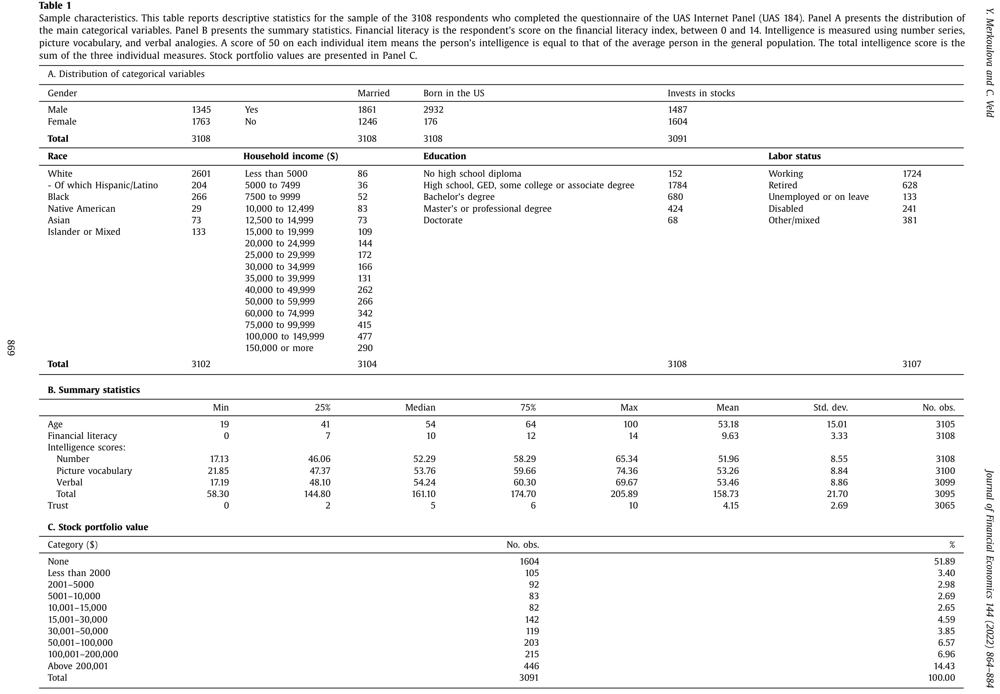
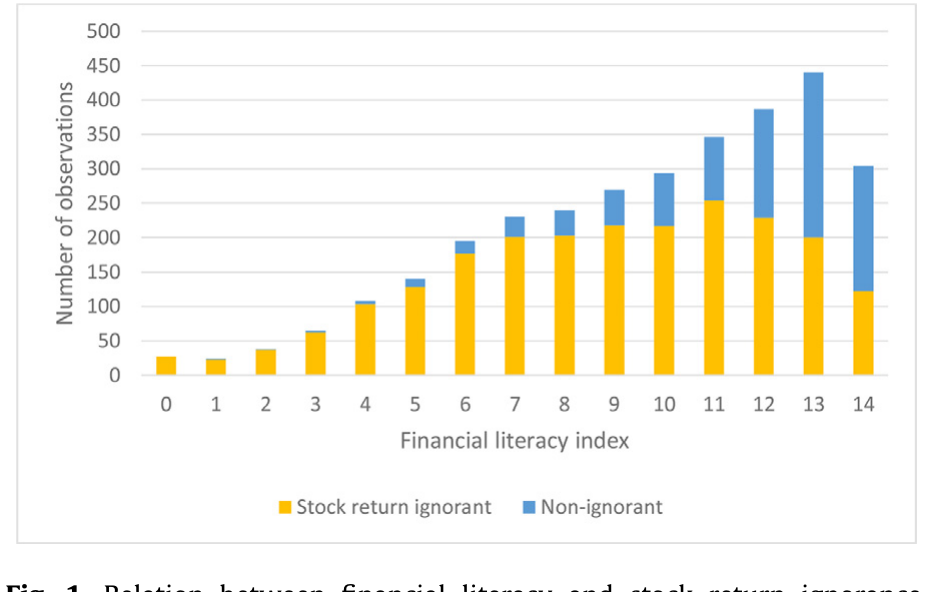
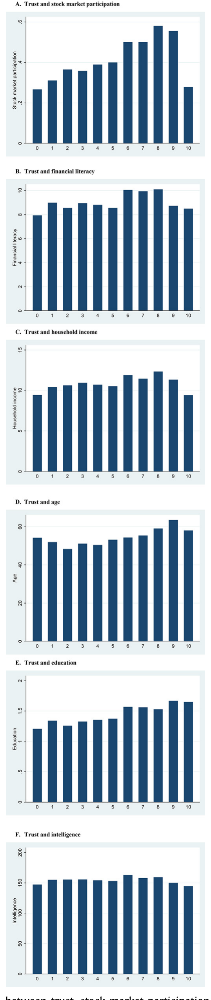
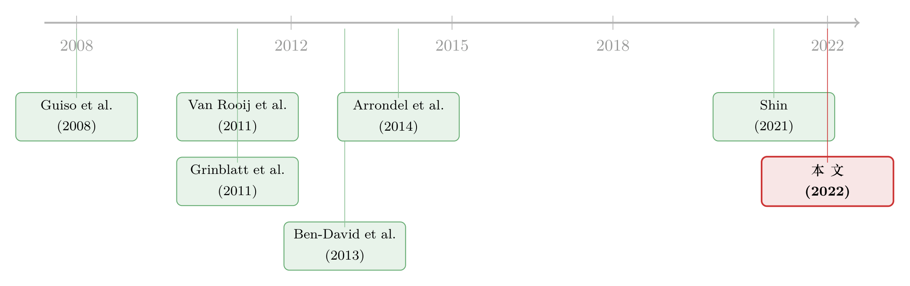

算不清股票能赚多少的人，反而更敢买？
本文读的是 Merkoulova & Veld (2022, Journal of Financial Economics)：用一份代表全美成年人口的问卷，作者发现超过一半的美国人答不出「股市平均一年能赚多少」这种最基本的问题。把回答不上来的、给出不可能分布的、以及盲目乐观的三类人合在一起，超过 70% 的样本都属于「股票收益无知（stock return ignorance）」。一般而言，无知会压低人们买股票的概率；但有一类「无知」——过度乐观——反而让人更敢入场。更耐人寻味的是：当一个人对收益一无所知时，是信任而不是认知，把他推进了股市。
1 一个被默认、却从未被检验的前提
打开任何一本投资学教材，第一页讲的几乎都是同一句话：要不要买股票，取决于你在「收益」和「风险」之间如何权衡。效用函数长什么样、要不要把劳动收入或经营风险也塞进去，文献里吵得不可开交，但有一点是大家默认的公理——风险—收益权衡（risk–return trade-off）是这道方程的核心。
可这道方程里有一个被所有人跳过的前提：人得知道股票的收益和风险大概长什么样，才谈得上权衡。于是 Merkoulova 和 Veld 提出了一个近乎天真、却从没人正面问过的问题：
一个普通人，到底对这个最基本的权衡懂多少？而这种「不懂」，又和他真实的投资决策有没有关系？
听上去像是把问题问小了。可一旦你真的去街上拦住一个人问「未来十年，股市平均一年涨多少？」，答案会让你怀疑那整本教材。21.4% 的受访者，连这道题都答不上来——而且是在系统专门弹出提示、请他们再想想之后，依然答不上来。
这就是本文的起点：在讨论人们怎么权衡收益与风险之前，先看看他们到底知不知道收益与风险是什么。
2 无知的三副面孔
作者借用了 Ben-David, Graham, and Harvey (2013) 在研究公司高管「误校准（miscalibration）」时用过的三道题，把它们改写得更适合普通人：先问「你预计未来十年股市的年均收益是多少」，再问这个收益分布的第 10 百分位和第 90 百分位（也就是悲观和乐观情形）。三道简单的题，恰好把「股票收益无知」拆成了三副面孔。
第一副：预期收益无知（expected return ignorance）。 最基本的一类——一个人看到了关于预期收益的问题，却交了白卷。注意，这不是漏题：系统对所有最初留空的人都弹出过提示，请他们「只有在真的毫无头绪时」才选「不知道」。即便如此，全样本 3108 人里只有 2442 人填了预期收益，剩下的 21.4% 被归为预期收益无知。
第二副：风险无知（risk ignorance）。 这一类人能给出一个预期收益，却说不清它的分布。作者举的例子很传神：有人预期年均收益 5%，可他报的第 10 百分位是 3%、第 90 百分位也是 5%——等于在说「这笔投资几乎没有任何向上的不确定性」；更极端的，有人预期 10%，上下尾却都填 50%。这种分布要么自相矛盾，要么隐含了一种「长期股市收益负偏到离谱」的信念。在能定义这一项的 2442 人里，1797 人（占 62.0%）是风险无知。
第三副：过度乐观（overoptimism）。 第三类人答了题，但答案离谱——把长期年均收益预期定在 30% 或更高。作者为什么把线画在 30%？因为他们用 Damodaran 的数据算了 1927 年以来所有滚动十年期的股市收益：最高的一个十年（1989–1998）年均也只有 16.9%，最低的（1999–2008）是 −1.0%。指望十年里年年平均 30%，只能叫盲目乐观。这一类有 131 人（外加一个「过度悲观」、预期低于 −30% 的孤例）。
把这三副面孔合起来——超过 70% 的样本，至少落入其中一类。也就是说，代表全美成年人口的这份样本里，真正对股票收益有一套靠谱认知的人，是少数派。

Table 1
3 这不是「金融素养」——知识与运用之间，隔着一条河
读到这里，一个自然的反驳会冒出来：这不就是「金融素养（financial literacy）」低吗？文献里早有一大堆研究讲金融素养如何影响投资，何必再造一个新词？
作者的回答，是这篇文章真正锋利的地方。金融素养，按 Lusardi 的经典定义，是「对复利、名义与实际、风险分散等基本金融概念的知识」——关键词是知识（knowledge）。而「股票收益无知」衡量的不是知识，是认知（cognition），是把知识运用起来、为自己的决策算出一个合理收益区间的能力。一个人可能把复利、分散投资背得滚瓜烂熟，却依然报不出一个像样的股市收益预期。知识与运用之间，隔着一条河。
为了把这两件事彻底分开，作者单独测量了金融素养：沿用 van Rooij, Lusardi, and Alessie (2011) 的题目，做了一把 14 分的量表，并在所有回归里把它作为控制变量。然后他们亮出了两个让人难忘的事实：
- 量表上得 0 分的 27 个人，无一例外全部是股票收益无知——这符合直觉；
- 但在另一端，拿到满分 14 分的 304 个人里，竟有 122 人（40%）仍然是股票收益无知。他们知道什么是复利、什么是分散，却报不出一个合理的预期收益和它的波动范围。

Figure 1: Relation between financial literacy and stock return ignorance
如图 1 所示，金融素养越高，股票收益无知的比例确实在下降；但即便到了素养的顶端，这条曲线也远没有归零。这正是作者要钉死的一点：Hilgert and Hogarth (2003) 早就提醒过，知识的增加并不必然带来行为的改善；Cole et al. (2011) 也实证发现，金融教育并没能有效提高人们对金融服务的需求。本文则更进一步——知识的增加，甚至不必然让你能把知识用在「算出一个合理的收益—风险权衡」上。（关于金融素养本身的实际效果，可参见《一门高中理财课，能让金融犯罪少三成？》。）
4 识别：一份「能拼起来」的问卷
接着，一个自然的问题是：你怎么知道这三类「无知」和投资决策的关联，不是被金融素养、智商、教育或人口特征「带出来」的？
本文的识别，老实说不是 DiD 或 IV 那种干净的因果设计——它建立在测量的分离和控制变量的叠加上，而这恰恰是它的工程难点所在。数据来自南加州大学运营的 Understanding America Study（UAS）面板，作者自己提交的是 UAS 184 这一份问卷，代表全美成年人口。真正的功夫在于：他们把这份问卷和面板里独立施测过的其他几份问卷拼接了起来——
- 智力（intelligence）：取自 UAS 83–85，用的是 Woodcock–Johnson 认知能力测验（数列、看图识词、言语类比），经两参数 logistic 的项目反应理论（item-response theory）模型打分，最后换算成均值 50、标准差 10 的 T 分；
- 金融素养：取自 UAS 121，14 分量表，13 题来自 van Rooij, Lusardi, and Alessie (2011)；
- 信任（trust）：沿用 Guiso, Sapienza, and Zingales (2008) 的做法，问的是世界价值观调查（World Values Survey）那道经典题——「一般来说，你认为大多数人可信，还是与人打交道要非常小心？」——用 0 到 10 的 11 点 Likert 量表（样本均值 4.15，中位数 5）。
最终样本 3108 人：女性 1763、男性 1345，2932 人在美国出生，1487（48%）持有股票（含退休账户）。问卷 2019 年 5 月发出，回收率高达 85.6%（3212 / 3754）。正因为智力、素养、信任都是另外几份问卷独立量出来的，作者才有底气说：把它们全部塞进回归之后，剩下的那部分股票收益无知，是它自己的东西。
5 主要结果：无知压低参与，唯独「乐观」反其道而行
把三类无知放进股市参与和投资额的回归，并控制住教育、智力、金融素养和人口特征之后，结果分两路走，而第二路正是全文的「反转」。
第一路，符合直觉。 对一个平均意义上的人：
- 预期收益无知，伴随低 16 个百分点的入市概率；
- 风险无知，伴随低 11 个百分点的入市概率；
- 投资额上同样如此——预期收益无知者的股票组合约小 5.5 万美元，风险无知者约小 3.5 万美元。
第二路，反直觉。 过度乐观的人，高 16 个百分点更可能入市，组合还大约 3.5 万美元。换句话说，同样是「对收益没有靠谱认知」，方向却完全相反：答不上来或算不清分布的人退场，而把收益幻想成 30% 的人，反而冲在最前面。
这其实戳中了一个更深的隐忧。文献里我们习惯把「更高的预期收益→更愿意参与」当成理性的体现——Hurd et al. (2011)、Arrondel et al. (2014)、Shin (2021) 都发现主观预期收益越高、参与概率越高。可本文提醒：这条正相关里，混进了一批预期高得离谱的人。他们的参与，不是基于信息，而是基于一个幻觉。把「过度乐观」从「合理乐观」里摘出来，是这篇文章给「预期收益→参与」这条经典关系打的一个重要补丁。（关于把参与决策拆开来量的另一种思路，可参见《94% 的人其实都想买股票——把「风险厌恶」和「麻烦」分开来量》；而散户如何被「过去的收益」牵着走，可参见《钱追着「去年的收益」跑》。）
6 分解：智力与性别，藏在无知背后
然后，一个更细的问题来了：智力和性别本就和参与相关，它们会不会是通过「股票收益无知」这条暗道起作用的？作者用 Blinder–Oaxaca 式、并按 Fairlie (2005) 推广到 logit/probit 的分解分析（decomposition analysis）来回答。
智力这一头的对比极其鲜明：在智力最高的十分位里，9% 的人有预期收益无知、1% 过度乐观、34% 风险无知；而到了最低的十分位，这三个数字分别飙到 36%、15%、90%。性别、家庭收入、金融素养能解释掉一部分差距，但很大一块解释不了——这部分很可能直接来自智力本身。
性别那一头则更克制也更诚实：以往研究都说男性参与率高于女性，本文的分解显示，男女在「股票收益无知」上的差异，只能解释参与率性别差距里的 0.4 到 1.5 个百分点。不是全部，但是实打实的一块。
7 真正的反转：当你一无所知，是「信任」把你推进了场
故事到这里还剩一个疙瘩没解开。既然无知普遍压低参与，那么——那些既风险无知、又真的买了股票的人，凭的是什么？他们手里几乎没有可以据以决策的信息，却下了单。这才是最反直觉的地方。
作者把目光转向了信任。在风险无知者这个子样本里，控制住其他因素后，他们发现：信任水平越高的人，越可能参与股市、投资额也越大。

Figure 2: Relation between trust, stock market participation, and other fac-
如图 2 所示，对那些对收益分布一无所知的人，信任替代了认知。这把本文和 Guiso, Sapienza, and Zingales (2008) 那篇著名的「信任股市（Trusting the stock market）」接上了头，却又往前推了一步：Guiso 等人讲的是信任如何普遍地促进参与；本文则精确地指出，信任的作用集中在认知缺位的人身上——当你算不清这笔买卖到底划不划算，是「我大体上相信别人、相信市场」这种朴素的信任，替你按下了入市的按钮。
于是全文落到一个干净的命题上：信任，可以作为认知的替代品，成为推动个人投资的一个正向因素。
8 文献脉络
把这篇文章放回它所在的那条河里，脉络其实很清晰。
一开始，人们想解释的是「股市参与之谜（stock market participation puzzle）」——理论上几乎人人都该把一部分财富投进股市，可 Favilukis (2013) 指出美国的参与率长期只在 31%–44% 之间徘徊。早期的解释五花八门：固定参与成本、窄框架、损失厌恶、模糊厌恶，以及 Guiso, Sapienza, and Zingales (2008) 提出的信任。

接着，研究者开始从「人」本身找答案。Grinblatt, Keloharju, and Linnainmaa (2011) 发现 IQ 与参与强相关；Van Rooij, Lusardi, and Alessie (2011) 用他们的基础与进阶金融素养模块，证明素养越低、参与越少。与此同时，另一条线在研究主观预期：Hurd, van Rooij, and Winter (2011)、Arrondel et al. (2014) 都发现预期收益越高、越可能参与；Shin (2021) 则在实验里指出「亲历收益」比「旁观收益」更能推动参与。
而方法论上的关键一砖，来自 Ben-David, Graham, and Harvey (2013)——他们用三道题测出公司高管严重「误校准」。本文把这三道题搬到了普通人身上，却发现：普通人的问题远不止误校准，而是连最基本的预期都给不出。于是这篇 2022 年的文章，恰好卡在「素养/智力」与「主观预期」两条线的交汇处：它既不是知识，也不只是误校准，而是把知识运用于决策的认知能力，并把信任请回来当作认知缺位时的替代品。
9 评论与延伸（Q&A + 研究方向）
（a）几个可能的疑问
Q：「股票收益无知」和「金融素养低」到底有没有本质区别，会不会只是换了个名字？
有区别，而且本文用数据钉死了。金融素养是单独用 14 分量表量的，并作为控制变量进回归。最有力的反证是：满分 14 分的 304 人里，仍有 122 人（40%）是股票收益无知。知识满分却用不出来——这说明二者不是一回事，前者是 knowledge，后者是 cognition。
Q：用问卷里自报的「参与」和「投资额」，可信吗？会不会有测量误差？
作者很诚实地承认所有股票相关变量都是自报的，并在文中统一省略「自报」二字。这是这类调查研究的天然软肋：人们可能记错、可能讳言。但参与率 48% 与 Favilukis (2013) 的口径大体吻合，给了一点旁证。真正的风险在于「无知」与「少报投资」可能同源——一个搞不清收益的人，也更可能搞不清自己持有多少。
Q：这是因果，还是相关？
基本是相关。没有 DiD/IV/RDD，识别靠的是「分离测量 + 控制变量叠加」。作者很克制，用词是「associated with」而非「causes」。最大的隐忧是反向因果与遗漏变量：可能是「不参与股市，所以懒得去了解收益」，而非「不懂收益，所以不参与」。分解分析能厘清渠道，却不能彻底定因果。
Q：把过度乐观的线画在年均 30%，会不会太武断？
作者给了一个站得住脚的标尺：1927 年以来所有滚动十年期里，最高的年均也只有 16.9%。30% 远在历史极值之外，作为「离谱」的门槛是合理的。但它毕竟是个硬切点，临近 30% 的人会因为微小的差别被归入不同类别，结果对这条线的敏感性值得关注。
Q：「信任替代认知」这个结论，会不会只是信任在所有人身上都促进参与，并非风险无知者独有？
这正是本文比 Guiso et al. (2008) 更细的地方：它把信任的效应定位在风险无知子样本里。但子样本回归的样本量更小、也更可能挑出特定人群，结论的稳健性需要看交互项是否在全样本里依然显著。把它读成「信任对认知缺位者尤其重要」是稳妥的，读成「只对他们重要」则要更谨慎。
Q：这对「股市参与之谜」到底意味着什么？
它给谜题加了一层更基础的解释：很多人不参与，未必是成本高或不信任，而是根本没在脑子里算这笔账。同时它也给「高预期→高参与」这条理性叙事降了温——那条正相关里混着一批纯靠幻觉入场的人。
（b）几个可能的研究问题与提案
1）债券市场里的「收益无知」。
【经济故事】本文讲的是股票。可对普通投资者而言，公司债的预期收益、违约损失、信用利差，比股票更晦涩。如果连金融高管都对股票误校准，普通人对「公司债能赚多少、会亏多少」的认知很可能更糟，这会不会解释零售投资者在信用市场长期缺席、以及债券基金里的羊群行为？ 【可行性】中。需要一份含债券持有与主观信用预期的家庭调查，UAS 这类面板可加挂模块。难点是债券预期收益本身就难问、难定义，问卷设计的工作量不小。
2）外资持有人与「东道国收益无知」。
【经济故事】把镜头转向跨境：外国散户/家庭对他国市场收益的认知，几乎注定比本土更模糊。如果「股票收益无知」压低本土参与，那它是否能部分解释股权本土偏好（home bias），尤其是对认知能力较弱的群体？信任（对外国制度的信任）是否同样替代认知、推动跨境配置？ 【可行性】中。可借多国版的世界价值观调查与跨国家庭金融调查（如 HFCS）拼接，但跨国问卷口径统一是硬骨头，识别上仍以相关为主。
3）信任与认知，在流动性冲击下谁更脆弱？
【经济故事】本文说信任把认知缺位的人推进了场。可这些「靠信任而非信息入场」的投资者，在市场剧烈波动时会不会更容易夺路而逃？如果是，他们就是放大流动性冲击的一群人——参与的理由越薄，撤退的触发越低。 【可行性】中高。把调查里的「无知 × 信任」标签与后续真实交易/赎回数据（券商或基金层面）链接，在某次市场大跌作为事件窗口，看哪类人卖得最猛。数据链接是关键门槛，但 UAS 这类可链接面板让它并非不可行。
4）能不能「教」会运用，而不只是「教」知识？
【经济故事】既然满分素养的人也四成无知，那么传统金融教育（灌输知识）大概率无效——Cole et al. (2011) 已有此暗示。真正该测的是：一个专门训练「把知识用于估算收益区间」的干预，能不能降低股票收益无知、进而改变参与？ 【可行性】高。可做随机对照实验（RCT），在面板里随机分配「运用型」与「知识型」两种培训，事后比较收益无知比例与参与变化。识别干净，UAS 已有先例（Lusardi et al., 2017 的可视化工具实验）。
10 我的判断
这篇文章的贡献，在于它把一个被所有投资组合模型默认、却从没被正面检验的前提，翻了出来摊在桌上：人未必知道股票的收益与风险长什么样。它最漂亮的两笔，一是用「满分素养仍有四成无知」干净利落地把 cognition 从 knowledge 里切了出来，二是抓住了「过度乐观反而促进参与」这个反转，给「高预期→高参与」的理性叙事打了补丁。而「信任替代认知」则把一条旧线（Guiso 等）接出了新意。
对识别的担忧也很直白：这本质上是一篇精心控制的相关性研究，反向因果（不参与所以不去了解）和自报数据的测量误差，都没法靠控制变量根除；三类无知的硬切点（尤其 30% 那条线）也让结果对设定有一定敏感性。
我接下来最想看到的，是把这些「无知」标签和真实的后续交易行为链接起来——一个在问卷里答不出收益、却靠信任入了场的人，在下一次市场大跌时会怎么做？如果答案是「跑得最快」，那么「股票收益无知」就不只是一个解释参与之谜的静态标签，而是一条理解市场在压力下为何脆弱的动态线索。这，恰恰是公司债与流动性研究最该接手的地方。
参考文献
- Arrondel, L., Calvo-Pardo, H., Tas, D. (2014). Subjective Return Expectations, Information and Stock Market Participation: Evidence from France. Unpublished working paper, University of Southampton.
- Ben-David, I., Graham, J.R., Harvey, C.R. (2013). Managerial miscalibration. Quarterly Journal of Economics 128(4), 1547–1584.
- Cole, S., Sampson, T., Zia, B. (2011). Prices or knowledge? What drives demand for financial services in emerging markets? Journal of Finance 66(6), 1933–1967.
- Fairlie, R.W. (2005). An extension of the Blinder–Oaxaca decomposition technique to logit and probit models. Journal of Economic and Social Measurement 30, 305–316.
- Favilukis, J. (2013). Inequality, stock market participation, and the equity premium. Journal of Financial Economics 107(3), 740–759.
- Grinblatt, M., Keloharju, M., Linnainmaa, J. (2011). IQ and stock market participation. Journal of Finance 66(6), 2121–2163.
- Guiso, L., Sapienza, P., Zingales, L. (2008). Trusting the stock market. Journal of Finance 63(6), 2557–2600.
- Hilgert, M.A., Hogarth, J.M. (2003). Household financial management: the connection between knowledge and behavior. Federal Reserve Bulletin (July), 309–322.
- Hurd, M., van Rooij, M., Winter, J. (2011). Stock market expectations of Dutch households. Journal of Applied Econometrics 26(3), 416–436.
- Merkoulova, Y., Veld, C. (2022). Stock return ignorance. Journal of Financial Economics 144(3), 864–884.
- Shin, M. (2021). Subjective expectations, experiences, and stock market participation: evidence from the lab. Journal of Economic Behavior & Organization, forthcoming.
- Van Rooij, M., Lusardi, A., Alessie, R. (2011). Financial literacy and stock market participation. Journal of Financial Economics 101(2), 449–472.